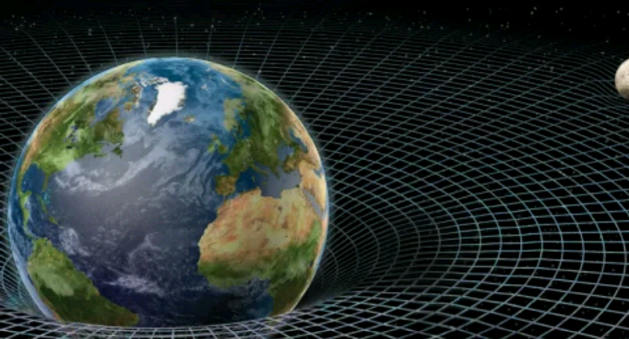
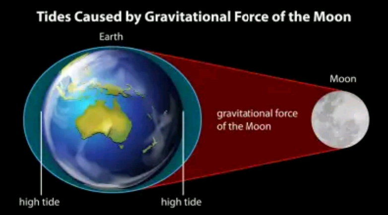

DEVELOPED BY ROBERT ZULU THE PROFESSIONAL PROGRAMMER
GRAVITY
GRAVITY VS GRAVITATION
These words means almost the same thing in everday use. Sometimes scientists use "Gravity" for the force that pulls objects towards each other, and "Gravitation" for the theory about the attraction.
1. Everyday sense: the force which causes objects to fallto the ground
2. Newton's laws: how gravity keeps the the Solar System and most
major astronomical objects together
3. Einstein's theory of general relativity: the role of gravity in the universe
Some physicists think gravity is caused by gravitons, but
they are still unsure .
Gravity, or Gravitation is one of the fundamental forces of the universe
. GRAVITY it is the force of attraction that causes physical things to move towards each other and fall towards the Earth. Gravity keeps Earth and all the planets in our Solar system in orbit around the sun. Gravity also keeps the Moon in orbit around the Earth. Without gravity, we would be floating around like astronauts in space
All objects in our Universe containing mass are exerting a gravitational force on other mass. If an object is small, the gravitational pull is smaller. If an object is large (like the Earth and Moon), the gravitational pull is enormous. So how is the Moon staying up there in the sky?
Since there is a force of attraction toward the Earth, it's as if the Moon "falls" into an orbit around the Earth and revolves around us. The Gravity of the Earth that holding us down is also keeping the Moon in orbit. Otherwise the Moon would just travel in a straight line.
WEIGHT VS MASS
In everyday talk, we say things fall because the Earth's gravity pulls on them. We talk as if our weight was a "given". Actually, weight changes when the pull of gravity changes. The Moon is much smaller and the pull of gravity on the Moon is about 1/6th that of Earth. So any object on the Moon weighs 1/6th of its weight on Earth. What does not change is the amount of matter in an object. That is called conservation of mass. On Earth, mass and weight are the same for most purposes,though a sensitive gravimeter can detect the difference. The difference can be very different on another world such as the Moon.
G-force
G-force is the measurement of acceleration (speeding up) forces.
1-g is the force of Earth's gravity and determines how much
we weigh.
At 5-gs, a race car diver experiences a force equal to
five times his weight.
TIDES
 Tides are the reqular upward and downward movement of the level of the ocean that is caused by pull of the Sun and the Moon on the Earth. Because the gravity of the Moon pulls on the Earth, the tides rise and fall daily. The sea level swells in waves when the Moon passes over the ocean. There are low tides and high tides daily, which constant movement. It yore've ever been to the ocean, you may have seen flags that are used to explain conditions of the water. The red flag describes when the tidal current (horizontal or sideways flow of water) is the strongest and when there are the most serious conditions in the water because of the up-and-down tidal movement. When the tide is rising, it is called flooding current. When the tide is falling, it is called ebbing current there are times when there is no ebbing or flooding. This is called slack water.